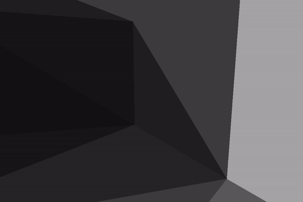
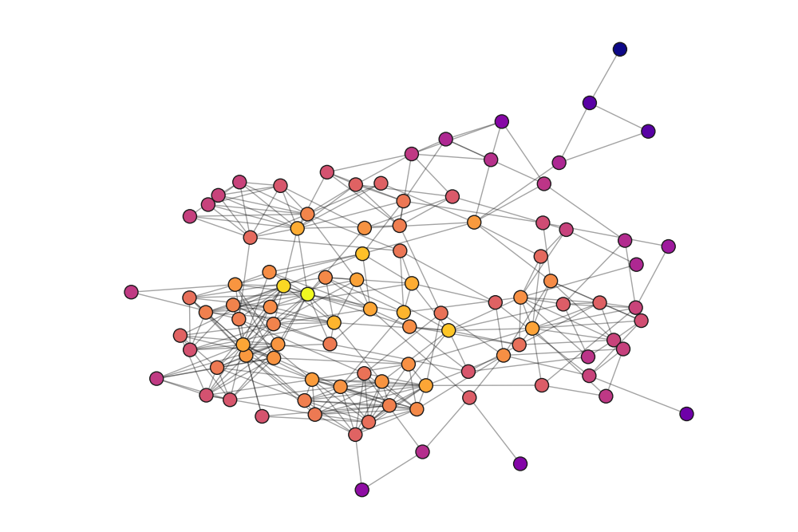

Hey! My name is Alec Chen.
I'm a budding software engineer and CS student at the University of Illinois
at Urbana-Champaign. This site is a visual collection of some of my projects.
Welcome!

3D Graphics Engine From Scratch
C++ Cinder
Created system of rendering 3D shapes and coordinates to a 2D screen using
c++. Implemented camera movement to simulate first person perspective
in 3D.
Nutribuddy
Javascript React Python Flask
Implemented dynamic frontend of a meal plan recommendation web app using
javascript and react. Designed UI/UX with figma and assisted in backend
development using python to create a REST API

Personal Organization App
Javascript React
This was the first project I worked on while learning React. I tried to
emulate a similar concept of linked databases that my current organization
app, Notion, uses. It parses the input into the appropriate data, and then
all the tables are controlled and filtered versions of a single database.

Social Network Analysis
Python Matplotlib Networkx
Collected friendship data through survey responses from high school
graduating class. Created visualizations and performed network analysis
with python, networkx, matplotlib, and seaborn. Wrote an article clearly
communicating key findings and breaking down statistical concepts into
understandable, applicable insight.